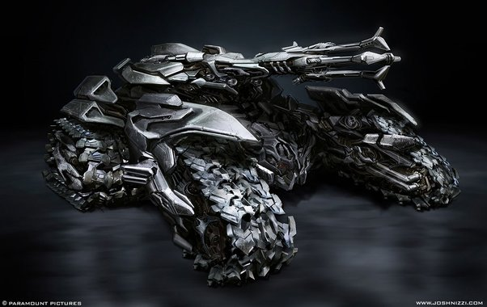
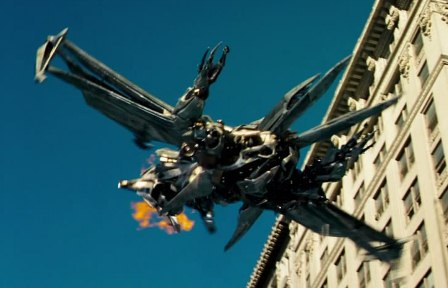
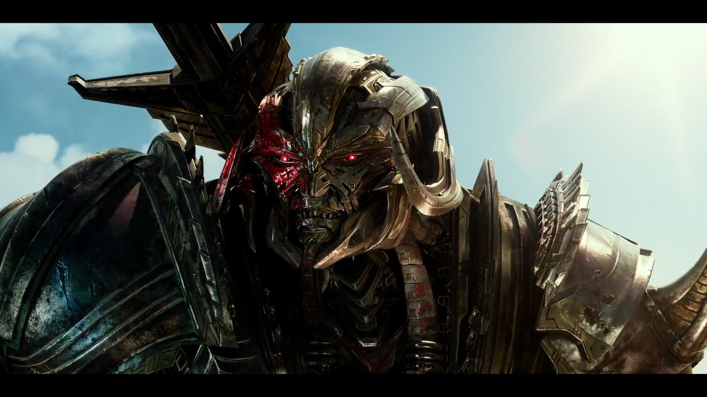

Megatron-Thủ lĩnh tối cao của Decepticon và là kỳ phùng địch thủ của Optimus Prime, khi biến hình sẽ trở thành một phi cơ chiến đấu kiểu Cybertron. Tên thời trẻ của Megatron là Megatronus - đấu sĩ lừng danh Cybertron và nhà cách mạng đấu tranh vì tự do - trước khi hắn bị tham vọng bá quyền làm tha hóa. Hắn và Optimus Prime từng là đồng đội tốt trước khi chiến tranh Autobot - Decepticon nổ ra. Megatron rất mạnh mẽ, tham vọng, tàn bạo và đầy mưu mô tính toán. Ở cuối phần một, hắn đồng ý liên minh với Autobot để tiêu diệt Unicron, thực chất là hắn muốn cứu Trái Đất để rồi thống trị nó. Mặc dù suốt phần 1 series, Optimus luôn hi vọng sẽ thay đổi được tư tưởng của Megatron, giúp hắn trở về con người khi xưa nhưng cuối cùng, ông biết rằng giữa hai thủ lĩnh Autobot và Decepticon, chỉ một người được sống và một kẻ phải ngã xuống (One shall stand, one shall fall). Ở tập cuối phần 3, Megatron đã bị BumbleBee kết liễu và xác của hắn rơi xuống đáy đại dương của địa cầu. Sau đó Unicron đã sử dụng thể xác hắn để quay về Cybertron, với ý định huỷ diệt Primus - kẻ thù truyền kiếp của Unicron.
Megatron là một nhân vật hư cấu và là nhân vật phản diện chính của thương hiệu truyền thông Transformers được sản xuất bởi công ty đồ chơi Mỹ Hasbro và công ty đồ chơi Nhật Bản Takara Tomy . Megatron là thủ lĩnh độc ác và chuyên chế của Decepticons , một phe gồm các dạng sống robot có tri giác, hiếu chiến tìm cách chinh phục hành tinh quê hương Cybertron và phần còn lại của vũ trụ đã biết. Anh ta đóng vai trò là kẻ thù không đội trời chung của Optimus Prime , thủ lĩnh của phe Autobot đối thủ . Như với tất cả các Cybertronians, Megatron có khả năng biến đổi giữa dạng người máy của mình và các phương tiện hoặc vũ khí khác nhau. Các chế độ thay thế của anh ấy đã thay đổi từ một Súng ngắn Walther P38 , vũ khí chùm tia hạt , pháo laze kính thiên văn và máy bay phản lực Cybertronian , tùy thuộc vào sự liên tục mà anh ta được mô tả.
Sau trận chiến, Prime bắt đầu trải qua sự thôi thúc trong tiềm thức, dẫn cả Autobots và Decepticons đến Vòng Bắc Cực. Khi họ đến, Shockwave đã ở đó để bắt họ như tội phạm chiến tranh. Shockwave đã thành công trong việc kết thúc cuộc chiến trên Cybertron, nhưng Prime sớm rơi vào tay một nhóm Autobot nổi loạn đã phát hiện ra Shockwave có chương trình lớn hơn. Tập hợp các Transformers trên khắp Cybertron để làm chính nghĩa, Prime đối mặt với Shockwave, nhưng đã bị đánh bại và Ma trận bị xé toạc khỏi anh ta và được sử dụng để kích hoạt Vector Sigma. Tuy nhiên, trước khi Shockwave có thể tận dụng hết dữ liệu của siêu máy tính, Ultra Magnus, anh trai của Prime, đã đến và đánh bại anh ta. Những vết thương mà Prime mắc phải trong cuộc xung đột này đòi hỏi một thời gian phục hồi kéo dài trong tình trạng đình trệ, nhưng việc Dreamwave đóng cửa có nghĩa là Prime không bao giờ xuất hiện trên các trang của họ nữa. Hình ảnh từ các vấn đề chưa được phát hành sau đó cho thấy Optimus Prime thức tỉnh từ buồng tái sinh lạnh và giải phóng Alpha Trion khỏi phòng thí nghiệm của Shockwave.
